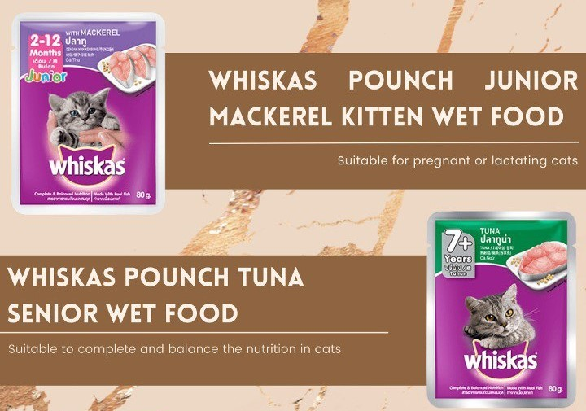
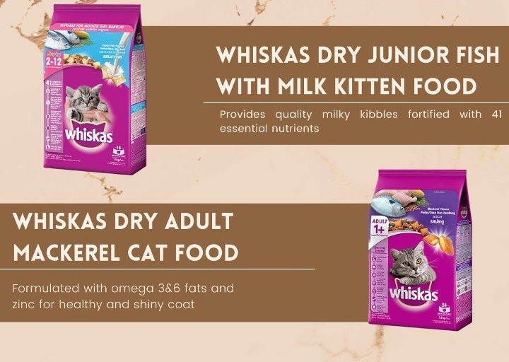

How Cat eat?
Cats are carnivores, which means they eat mostly meat.
House cats evolved from hunters who ate high amounts of
protein and some fat and carbohydrates. They still need
the same type of diet which is meat. You shouldn't
feed them a vegetarian diet. They also need a good balance
of fat, carbohydrates, vitamins, minerals, fatty acids,
and amino acids, which are building blocks for protein.
Cats' dietary needs change with age and health.
Wet Food

Kittens need their mother’s milk from birth until they are 4 weeks old.
Once weaning starts, they need high amounts of protein. As kittens
grow, the amount of protein they need will steadily drop.
Kittens also need calcium as well as fats for energy and fat-soluble vitamins.
Kittens can start to eat wet food after their eyes open and they can move around well on their own. You can start to introduce dry food at 6 weeks,
but the main food should be wet food that is high in protein.
Dry Food

Dry food is made of a mixture of meat and meat byproducts, grain,
vitamins, minerals, poultry and poultry byproducts, and fish meal. This
mixture is dried into small bite sizes and is often coated in fat, which
helps with taste.
Sometimes, though, cats don’t like dry food and don’t digest it very well.
by most vets while noncore vaccines are suggestted by vets depends on the environment
situation.